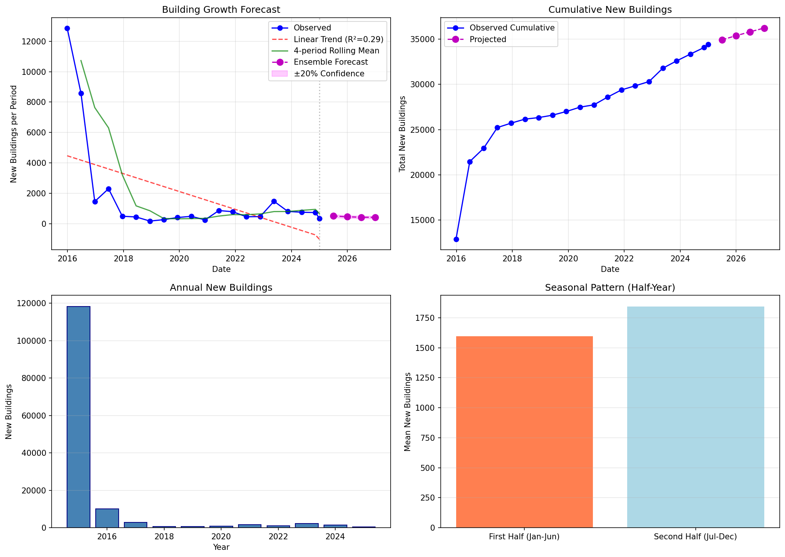
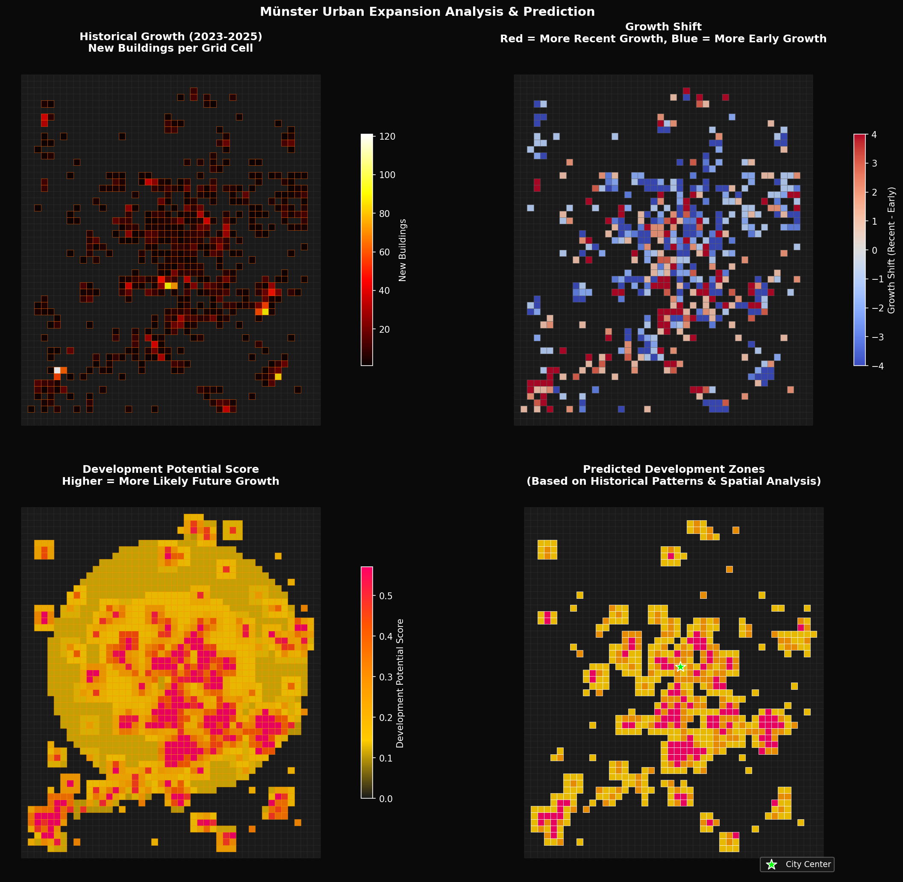
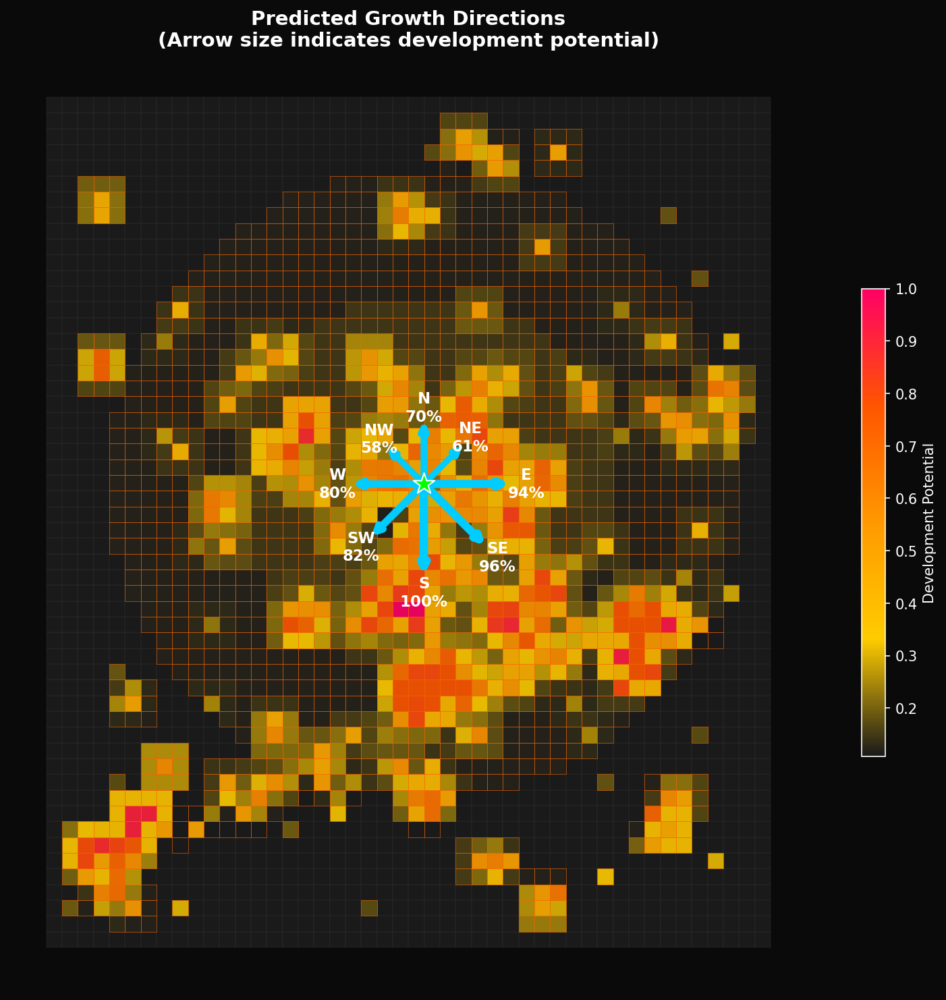

Time series predictions and spatial development potential analysis
Three forecasting methods were combined into an ensemble for robust predictions:
Fits a linear regression to recent data and projects forward. Captures overall direction.
Weights recent observations more heavily, with adaptive trend components.
Averages the last 4 periods for a stable baseline estimate.
| Period | Linear | Exp. Smooth | Simple Avg | Ensemble |
|---|---|---|---|---|
| 2025-07 | 647 | 210 | 660 | 506 |
| 2026-01 | 629 | 71 | 660 | 453 |
| 2026-07 | 610 | 0 | 660 | 424 |
| 2027-01 | 592 | 0 | 660 | 417 |

Figure 1: Time series forecast with historical data and projections
Future development locations were predicted using a composite score based on:
| Potential Class | Cells | Area (km²) |
|---|---|---|
| Very High | 104 | 26.0 |
| High | 171 | 42.8 |
| Moderate | 320 | 80.0 |
| Low | 1,889 | 472.3 |

Figure 2: Multi-panel development potential analysis

Figure 3: Predicted growth directions from city center